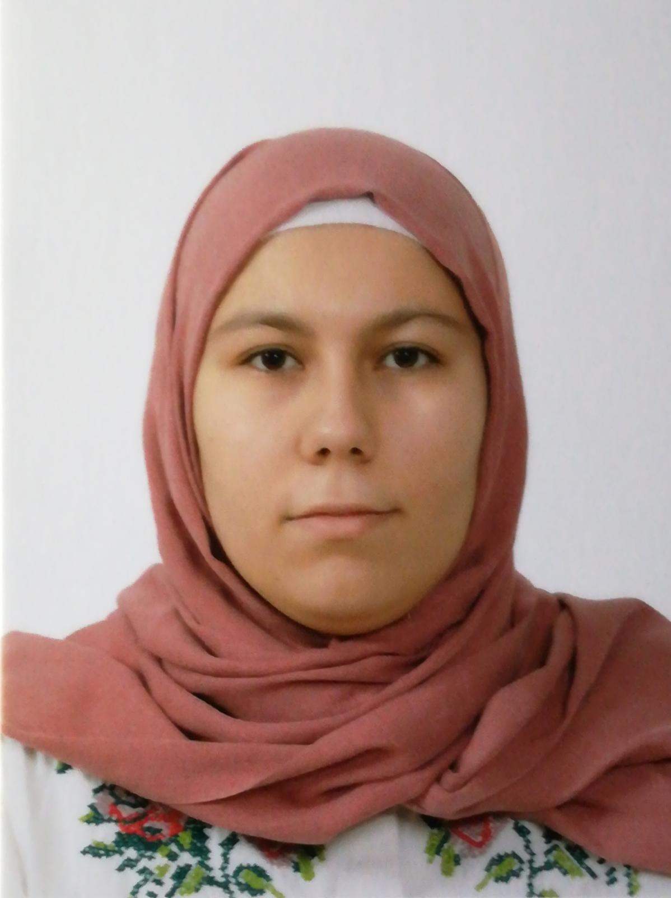
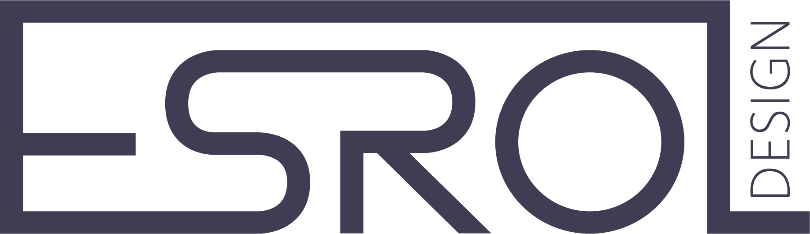

Ik ben Esra Varol en ik ben 22 jaar oud. Ik heb Grafische en Digitale Media - Crossmedia ontwerp gestudeerd aan de AP hogeschool te Antwerpen.
Tijdens mijn opleiding heb ik stage gelopen bij Mediageuzen NV (Culinaire Ambiance). Tijdens mijn stage heb ik veel bijgeleerd en weet ik hoe ik moet werken in een groot bedrijf.
In mijn vrije tijd hou ik me vooral bezig met fotografie en gamen. Ook vind ik het leuk om dingen bij te leren.

Tijdens mijn opleiding heb ik geleerd om te werken met HTML, CSS, Javascript en Wordpress. Ook heb ik geleerd om verschillende Adobe programma's te gebruiken zoals After Effects, Premiere Pro, Illustrator, Photoshop en Indesign. Mijn portfolio kunt u vinden onder het tabblad "ontwerpen".
Hieronder kunt u mijn CV downloaden en bekijken.
Esroldesign is de naam die ik gebruik bij mijn eigen ontwerpen. "Esrol" is de combinatie van mijn naam Esra en mijn achternaam Varol. Sinds het derde middelbaar ben ik geïnteresseerd in digitale media en sindsdien gebruik ik deze naam bij mijn projecten.
